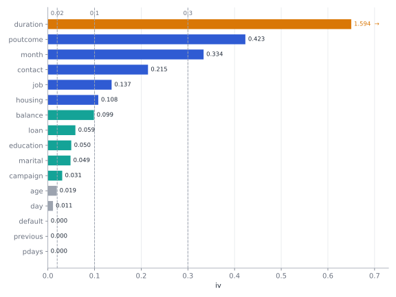

Risk modeling workflow#
This example follows the steps of a scorecard project with kivi: profile and screen the candidate variables, bin the shortlist, encode it with WOE and save the binning for production, select the variables and fit the model, scale it to a scorecard, evaluate it, calibrate it on a master scale, set a cut-off with its expected loss, and prepare the stability report used in monitoring. The bundled data record a marketing response rather than a default, but the steps are the same for a credit default flag: use the bad flag as target.
>>> import numpy as np
>>> import pandas as pd
>>> from kivi.binning import bin_edges
>>> from kivi.datasets import Dataset
>>> from kivi.stability import psi_table
>>> from kivi.woe import woe_table, woe_transform
>>> data = Dataset.bank_data()
>>> development, monitoring = data.iloc[:3000], data.iloc[3000:]
Screen variables by IV#
Start with a profile of every candidate. profile_table() gives each one row with its missing values, its most frequent value and, with the target, the IV of a quick, uniform binning: five quantile bins for numeric variables and the raw labels for categorical ones; see Univariate profile. The IV of each variable gives a first ranking, and tied_bins marks the numeric variables whose tied values leave fewer bins than requested:
>>> from kivi.univariate import profile_table
>>> profile = profile_table(development.drop(columns="target"), development["target"])
>>> profile.index[profile["tied_bins"]].tolist()
['campaign', 'pdays', 'previous']
>>> iv = profile["iv"].sort_values(ascending=False)
>>> iv.round(3).head(8)
variable
duration 1.594
poutcome 0.423
month 0.334
contact 0.215
job 0.137
housing 0.108
balance 0.099
loan 0.059
Name: iv, dtype: float64

IV of every candidate variable with quick binning. The dashed lines mark the 0.02, 0.1 and 0.3 bands; duration is cut off at the right edge of the chart.#
Read the ranking critically before building the shortlist:
durationis the length of the last call. It is only known after the call, when the outcome is largely decided, so its IV of 1.59 is a leak rather than a signal. The dataset’s documentation recommends leaving it out of a realistic model. In credit risk, look for the same pattern in fields filled in after the decision, such as collection status.monthdescribes when the campaign ran rather than who the customer is, so it is left out as well.pdaysandpreviousshow an IV of zero only because their tied values collapse into one quantile bin. Custom edges or thespecialargument recoverpdays; see Custom edges and Special values.
Bin the shortlist#
Each variable on the shortlist gets edges that can be explained: merged balance bins with a monotonic WOE, a bin of its own for the pdays == -1 code, policy age bands, and the raw labels of the categorical variables. The twelve labels of job could also be grouped first, as in Grouping categories; this example keeps them as they are. Keep the binning in one place so that development and monitoring data are grouped identically.
>>> fine = bin_edges(development["balance"], bins=10)
>>> numeric_edges = {
... "balance": fine[[0, 3, 7, 10]],
... "pdays": np.array([-np.inf, -1, 100, 200, 300, np.inf]),
... "age": np.array([-np.inf, 25, 35, 45, 55, 65, np.inf]),
... }
>>> categorical = ["poutcome", "contact", "housing", "job"]
>>> def to_groups(frame):
... groups = {column: pd.cut(frame[column], edges) for column, edges in numeric_edges.items()}
... groups.update({column: frame[column] for column in categorical})
... return pd.DataFrame(groups)
>>> dev_groups = to_groups(development)
>>> tables = {column: woe_table(dev_groups[column], development["target"]) for column in dev_groups}
tables holds one woe_table() result per variable. Review each one as a WOE chart (see Weight of evidence and information value) before moving on. pdays and poutcome both describe the previous campaign, so check how strongly they are correlated before keeping both.
Encode with WOE#
A logistic regression on WOE values is the classic scorecard model. Replace each group with the WOE from the development tables using woe_transform():
>>> def to_woe(groups):
... return pd.DataFrame({
... column: woe_transform(groups[column], tables[column]) for column in groups
... })
>>> X_dev = to_woe(dev_groups)
>>> X_dev.head(3).round(3)
balance pdays age poutcome contact housing job
0 0.373 -0.257 -0.032 -0.257 0.241 0.333 -0.233
1 0.373 -0.092 -0.032 0.214 0.241 -0.327 -0.339
2 0.373 -0.092 -0.032 0.214 0.241 -0.327 0.271
woe_transform raises an error for a group that never appeared in development, such as a new category. Agree on a policy before scoring new data, for example unseen=0.0 for a neutral WOE.
Save the binning#
Production systems must group and encode new applications exactly as the development sample was. fit_spec() fits the edges and the WOE table of every column at once, and the resulting BinningSpec saves them as versioned JSON; see Binning specifications. Passing the edges of the shortlist as bins reproduces the encoding above:
>>> from kivi.spec import BinningSpec, fit_spec
>>> spec = fit_spec(development, development["target"], columns=list(dev_groups), bins=numeric_edges)
>>> spec.woe_transform(development).equals(X_dev)
True
>>> restored = BinningSpec.from_json(spec.to_json())
>>> restored == spec
True
Store the JSON with the model. A scoring service that loads it with BinningSpec.from_json encodes new data with restored.woe_transform(frame), without the code of the development project.
Select variables and fit the model#
Strongly correlated variables carry the same information and make the coefficients unstable. correlation_filter() keeps the variable with the higher IV from each pair correlated above 0.7, and stepwise() then selects variables by the p-values of a logistic regression. With WOE inputs every coefficient should be positive, and stepwise rejects a variable that would make one negative; see Variable selection.
>>> from kivi.selection import correlation_filter, logistic_regression, stepwise
>>> target = development["target"]
>>> iv_dev = pd.Series({column: table["iv"].sum() for column, table in tables.items()})
>>> kept = correlation_filter(X_dev, priority=iv_dev)
>>> X_dev.columns.difference(kept).tolist()
[]
>>> selected = stepwise(X_dev[kept], target)
>>> selected.tolist()
['balance', 'pdays', 'poutcome', 'contact', 'housing', 'job']
>>> model = logistic_regression(X_dev[selected], target)
>>> model.round(3)
coef se z p_value
intercept -2.028 0.062 -32.694 0.000
balance 0.776 0.183 4.245 0.000
pdays 0.346 0.122 2.834 0.005
poutcome 0.671 0.112 5.985 0.000
contact 0.580 0.153 3.793 0.000
housing 0.597 0.190 3.138 0.002
job 0.632 0.170 3.721 0.000
No pair is correlated strongly enough to drop a variable, and stepwise leaves out age. The model is fitted on the development sample only.
The bank data record the outcome of every customer. A credit development sample usually holds only the applications that the previous policy approved, and a model fitted on them alone underestimates the risk of the applicants it used to decline. Reject inference infers their outcomes and refits the model with weights.
Scale to a scorecard#
points_table() turns the WOE tables and the coefficients into points for every group. Here 20 points double the odds of a good outcome, and a score of 600 stands for good:bad odds of 50; see Scorecard. A higher WOE means more risk and therefore fewer points:
>>> from kivi.scorecard import points_table, woe_to_points
>>> scale = dict(pdo=20, base_score=600, base_odds=50)
>>> coefficients = model["coef"].drop("intercept")
>>> intercept = model.loc["intercept", "coef"]
>>> card = points_table({column: tables[column] for column in selected}, coefficients, intercept, **scale)
>>> card.loc["poutcome"].round({"woe": 3, "points": 1})
bin woe points
variable
poutcome unknown -0.257 95.9
poutcome failure 0.214 86.8
poutcome other 0.592 79.5
poutcome success 2.548 41.6
Score the monitoring sample with the development tables: each customer’s score is the sum of their points.
>>> mon_groups = to_groups(monitoring)
>>> mon_points = woe_to_points(to_woe(mon_groups)[selected], coefficients, intercept, **scale)
>>> mon_score = mon_points.sum(axis=1)
>>> mon_points.assign(score=mon_score).head(3).round(1)
balance pdays poutcome contact housing job score
3000 91.0 93.5 95.9 87.5 85.2 90.0 543.1
3001 102.6 93.5 95.9 106.3 96.6 86.0 580.9
3002 82.6 93.5 95.9 86.9 96.6 97.1 552.6
Evaluate the model#
A higher score means lower risk, while the measures in Model performance expect a score that rises with the event probability. Pass the probability that each score stands for. The gains table uses bands fitted on the development scores, so that both samples are cut alike:
>>> from kivi.metrics import gains_table, gini, ks
>>> from kivi.scorecard import score_to_pd
>>> dev_score = woe_to_points(X_dev[selected], coefficients, intercept, **scale).sum(axis=1)
>>> dev_pd, mon_pd = score_to_pd(dev_score, **scale), score_to_pd(mon_score, **scale)
>>> y_mon = monitoring["target"]
>>> print(f"Gini = {gini(mon_pd, y_mon):.3f}, KS = {ks(mon_pd, y_mon):.3f}")
Gini = 0.375, KS = 0.285
>>> pd_edges = bin_edges(dev_pd, bins=5).round(3)
>>> gains = gains_table(mon_pd, y_mon, bins=pd_edges)
>>> gains[["total", "event_rate", "lift", "cum_event_share"]].round(3)
total event_rate lift cum_event_share
bin
(0.144, inf] 356 0.233 2.050 0.480
(0.102, 0.144] 250 0.104 0.914 0.630
(0.076, 0.102] 296 0.095 0.832 0.792
(0.05, 0.076] 291 0.069 0.604 0.908
(-inf, 0.05] 328 0.049 0.429 1.000
The riskiest band, about a fifth of the monitoring sample, holds 48% of its events at about twice the average event rate.
A monitoring sample of this size measures the Gini with some uncertainty. roc_auc_interval() gives the DeLong standard error and the 95% interval of the AUC and of the Gini:
>>> from kivi.metrics import roc_auc_interval
>>> roc_auc_interval(mon_pd, y_mon).round(3)
estimate se lower upper
auc 0.687 0.023 0.643 0.732
gini 0.375 0.045 0.286 0.464
>>> print(f"development Gini = {gini(dev_pd, target):.3f}")
development Gini = 0.432
With 173 events among 1,521 customers, the interval of the Gini runs from 0.286 to 0.464. It contains the development Gini of 0.432, which is itself optimistic because the binning, the variables and the coefficients were all fitted on the development sample, so the lower Gini of the monitoring sample is within the sampling noise. Model performance also compares two scores on the same sample with the DeLong test.
Check calibration#
Rating grades give PDs from different models one meaning. master_scale() builds a scale from the PD of each grade, here five grades in which each PD doubles the one before, and assign_grades() gives every customer of the monitoring sample the grade of their PD; see Calibration. Each grade is then compared with its PD. The Jeffreys test asks whether a grade has more events than its PD predicts, so a small p-value flags a grade that underestimates risk:
>>> from kivi.calibration import assign_grades, calibration_table, jeffreys_test, master_scale
>>> scale = master_scale(np.geomspace(0.025, 0.4, 5), labels=list("ABCDE"))
>>> scale.round(4)
lower probability upper
grade
A 0.0000 0.025 0.0354
B 0.0354 0.050 0.0707
C 0.0707 0.100 0.1414
D 0.1414 0.200 0.2828
E 0.2828 0.400 1.0000
>>> grades = assign_grades(mon_pd, scale)
>>> grade_table = calibration_table(grades, y_mon, mon_pd).join(scale["probability"])
>>> grade_table["jeffreys"] = jeffreys_test(
... grade_table["event"], grade_table["total"], grade_table["probability"]
... )
>>> grade_table.round(3)
total event event_rate mean_probability probability jeffreys
bin
A 139 6 0.043 0.030 0.025 0.093
B 419 27 0.064 0.053 0.050 0.091
C 589 56 0.095 0.101 0.100 0.649
D 286 45 0.157 0.177 0.200 0.967
E 88 39 0.443 0.467 0.400 0.204
No grade is rejected at the 5% level, but grades A and B come close: their event rates of 4.3% and 6.4% exceed their PDs of 2.5% and 5%, and the monitoring of the next periods should watch them. Grade D has fewer events than its PD, which this one-sided test does not flag.
Set a cut-off#
The scorecard ranks the applicants, and a cut-off decides whom to approve. cutoff_table() shows, for each candidate PD cut-off, the share of applicants it approves, the bad rate of the approved book and the share of the events it turns away; see Credit strategy. The upper bounds of the grades as cut-offs approve the grades up to each one:
>>> from kivi.strategy import cutoff_table, expected_loss_table
>>> policies = cutoff_table(mon_pd, y_mon, cutoffs=scale["upper"])
>>> columns = ["approval_rate", "approved_event_rate", "rejected_event_share"]
>>> policies.set_index(scale.index)[columns].round(3)
approval_rate approved_event_rate rejected_event_share
grade
A 0.091 0.043 0.965
B 0.367 0.059 0.809
C 0.754 0.078 0.486
D 0.942 0.094 0.225
E 1.000 0.114 0.000
Approving the grades up to C, a PD of at most 14.1%, approves 75.4% of the applicants at a bad rate of 7.8% and turns away 48.6% of the events. Approving grade D as well approves 94.2% at a bad rate of 9.4%. Which row to choose is a business decision; the table shows its price.
The expected loss of an exposure is its PD times its loss given default times its exposure at default. expected_loss_table() adds it up for each grade. The bank data have no loan amounts, so the example takes the balance, floored at zero, as the exposure and one LGD of 45%:
>>> exposure = monitoring["balance"].clip(lower=0)
>>> by_grade = expected_loss_table(grades, mon_pd, 0.45, exposure)
>>> by_grade[["exposure", "expected_loss", "expected_loss_rate"]].round(
... {"exposure": 0, "expected_loss": 0, "expected_loss_rate": 4}
... )
exposure expected_loss expected_loss_rate
bin
A 28316.0 415.0 0.0147
B 391913.0 9604.0 0.0245
C 951396.0 46003.0 0.0484
D 793187.0 66906.0 0.0844
E 156797.0 32050.0 0.2044
Grade E holds 6.8% of the exposure but 20.7% of the expected loss of 154,978, and grades D and E together hold 41% of the exposure and 64% of the expected loss.
Report stability#
Compare each variable of the monitoring sample with its development distribution. The status column applies the PSI conventions from Population stability index.
>>> report = pd.DataFrame({
... "iv": {column: tables[column]["iv"].sum() for column in dev_groups},
... "psi": {column: psi_table(dev_groups[column], mon_groups[column])["psi"].sum()
... for column in dev_groups},
... })
>>> report["status"] = pd.cut(report["psi"], [-np.inf, 0.1, 0.25, np.inf],
... labels=["stable", "watch", "shift"])
>>> from kivi.stability import csi_table
>>> report["csi"] = pd.Series({
... column: csi_table(dev_groups[column], mon_groups[column], card.loc[[column]])["csi"].sum()
... for column in selected
... })
>>> report.sort_values("iv", ascending=False).round(3)
iv psi status csi
poutcome 0.423 0.003 stable -0.343
pdays 0.360 0.005 stable -0.072
contact 0.215 0.008 stable 0.310
job 0.137 0.005 stable 0.176
balance 0.115 0.000 stable -0.141
housing 0.108 0.000 stable -0.033
age 0.061 0.005 stable NaN
Every variable is stable here, as expected when the monitoring rows come from the same population. The csi column weights each group’s change of share with its points, so it is the change of the variable’s average points; age is not in the scorecard and has none. Over the variables of the scorecard, the CSI adds up to the change of the average score:
>>> shift = mon_score.mean() - dev_score.mean()
>>> print(f"sum of csi = {report['csi'].sum():.3f}, score shift = {shift:.3f}")
sum of csi = -0.102, score shift = -0.102
The score itself is monitored the same way, with bands fitted on the development scores:
>>> score_edges = bin_edges(dev_score, bins=5).round(1)
>>> score_psi = psi_table(pd.cut(dev_score, score_edges), pd.cut(mon_score, score_edges))
>>> print(f"score PSI = {score_psi['psi'].sum():.4f}")
score PSI = 0.0029
Population stability index shows what a shift looks like. In production, monitoring_table() repeats this PSI for every period together with the known outcomes and the Gini, and stability_table() the PSI of every variable; see Model monitoring. Once the approved loans are booked, Vintage and roll-rate analysis follows their delinquency, and Lifetime PD and expected credit loss turns it into PD term structures and the IFRS 9 loss allowance.